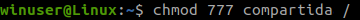
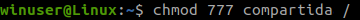

1. Instalación de las ISOS
El primer paso es instalar las ISOS de Linux y de windows.
Una vez instalados crearemos dos maquinas virtuales de Linux y de Windows y configuraremos las REDES NAT de cada uno.
1.1 Configuración de la RED NAT
Entramos en las herramientas de la maquina virtual, seleccionamos el apartado de Redes NAT, creamos un nombre y lo aplicamos.

Entramos en la Configuración de windows y linux, seleccionamos el apartado de red, la conectamos a la Red NAT y seleccionamos la red que hemos creado.
Lo tenemos que hacer en ambas maquinas para enlazarlasb.

2. LINUX
Entramos en la maquina virtual de Linux e instalamos una terminal.
(En mi caso he instalado Terminator).

2.1 Actualizamos los sistemas
Para poder utilizar correctamente estos sistemas debemos de actualizarlos, para ello utilizaremos los siguientes comandos:
su -> (Para entrar en el administrador).
apt upgrade -> (Para instalar las actualizaciones)
apt update -> (Para actualizar las actualizaciones instaladas anteriormente)

2.2 Instalamos Samba
Samba es un conjunto de programas que trabajan juntos para permitir a los clientes acceder a espacios de archivos del servidor e impresoras mediante los protocolos SMB (Server Message Block).
Para instalarlo utilizaremos el siguiente comando:
apt install samba ->

2.3 Creamos un usuario
Creamos un nuevo usuario para compartir los documentos.
Adduser winuser ->
Creamos una contraseña y avanzamos los siguientes pasos dandole al enter. (Sin poner ningun dato)


Le damos a "Y" para continuar
2.4 Creamos una carpeta
Primero nos logamos con el usuario creado anteriormente poniendo la contraseña que hayamos elegido, y seguimos los siguientes pasos:
su winuser ->
cd .. -> (Para salir de la carpeta en la que estemos).
cd winuser -> (Para entrar en nuestra carpeta).
mkdir compartida -> (Para crear una carpeta llamada compartida).
chmod 777 compartida/ -> (Para darle todos los permisos)
 

2.5 Instalamos Vim
Vim es un editor de texto de código abierto, libre y multiplataforma, disponible en la mayoría de sistemas tipo Unix.
Para instalarlo tenemos que entrar como administrador utilizando "su" y ponemos el siguiente codigo:
Apt-get install vim ->

2.6 Editamos el archivo con Vim
Vim /etc/samba/smb.conf ->
Podemos utilizar nano si no nos funciona vim:
Nano /etc/samba/smb.conf ->

Dentro de Vim nos dirigimos al final de la pagina y le damos a la tecla insert (Ins) y escribimos lo siguiente:
[Compartida]- path = /home/winuser/compartida
- browseable = yes
- read only = no
- valid users = winuser

Salimos de vim dandole al escape y escribiendo:
:wq -> (write, quit)
2.7 Creamos usuario
Primero añadimos a winuser a los usuarios de samba y le ponemos una contraseña
smbpasswd -a winuser -> (Puede coincidir con la contraseña antigua)

Ahora nos cambiamos al usuario winuser para crear un archivo dentro de la carpeta "compartida". Utilizaremos los siguiente comandos:
su winuser ->
cd .. ->
cd winuser/compartida/ -> (Para entrar en la carpeta)
touch archivo-linux -> (Para crear el archivo)

2.8 Reseteo servicio samba
su -> Y ponemos la contraseña
systemctl restart smbd.service -> (Si no funciona porque no estaba en ejecucion utilizaremos : reload-or-restart)

Por ultimo miramos la direccion ip de la maquina y la anotamos.
ip a ->
En mi caso es 10.0.2.15

3. WINDOWS
En Windows tenemos que habilitar el uso compartido de archivos y carpetas.
Entramos en la Configuración avanzada del firewall y habilitamos todas las reglas de "Archivos e impresoras compartidos".

Entramos en la Configuracion avanzada.

Dentro de la configuracion avanzada le damos a Reglas de Entrada.
Seleccionamos las reglas de Archivos e impresoras compartidos

3.1 Comprobacion de Ping
Con la IP que anotamos anteriormente en Linux la ponemos en windows con el siguiente comando.
ping 10.0.2.15 -> (En cada caso la ip que nos den).

4. Ejecutar
Despues de comprobar si tenemos ping abrimos ejecutar ya desde nuestro dispositivo y escribimos:.
\\iplinux\compartida -> (En iplinux ponemos la ip obtenida anteriormente)

Entraremos en la carpeta compartida y comprobamos si podemos crear archivos, entrar en ellos, etc.